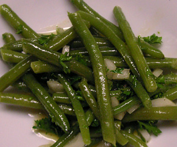

Bohnensalat
5 von 6biobohnen rüsten und ca. 10 minuten mit etwas salz in kochendem wasser blanchieren (sollten noch biss haben). mit kaltem wasser abschrecken. nach belieben eine salatsauce (z.b. mit zwiebeln und peterli) darübergeben und etwas ziehen lassen.
